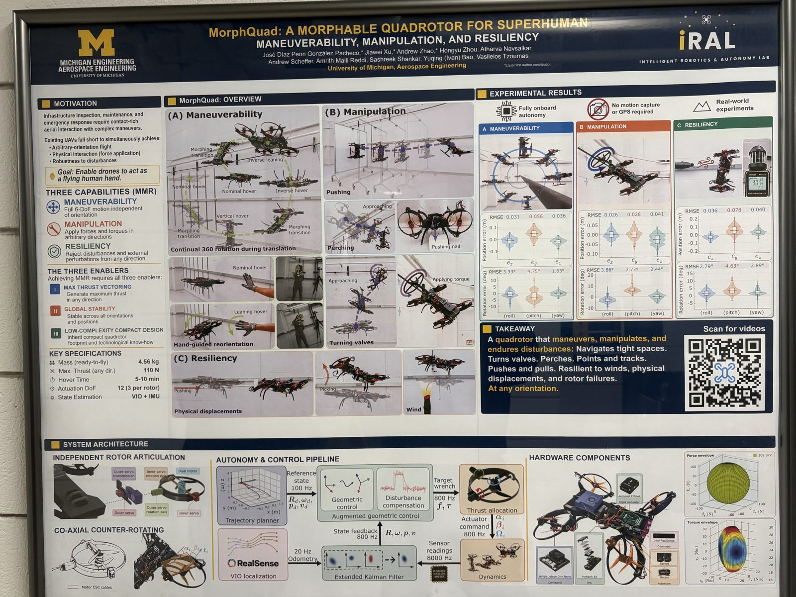
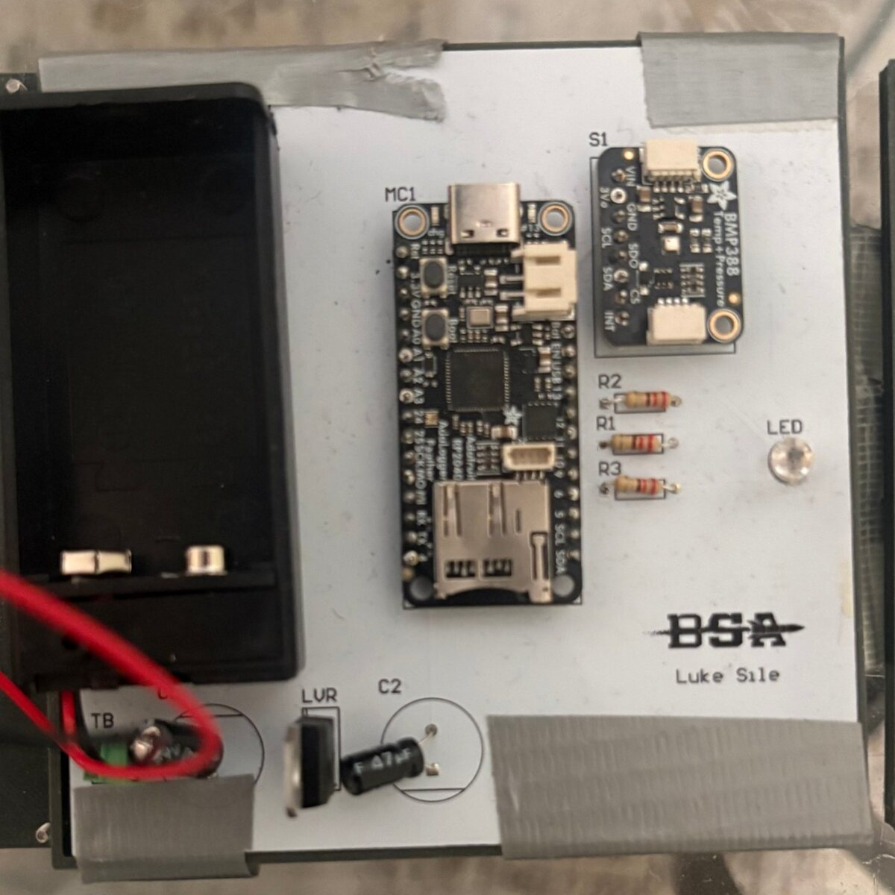
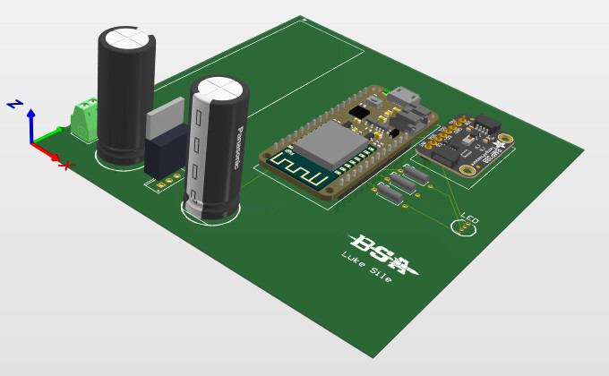
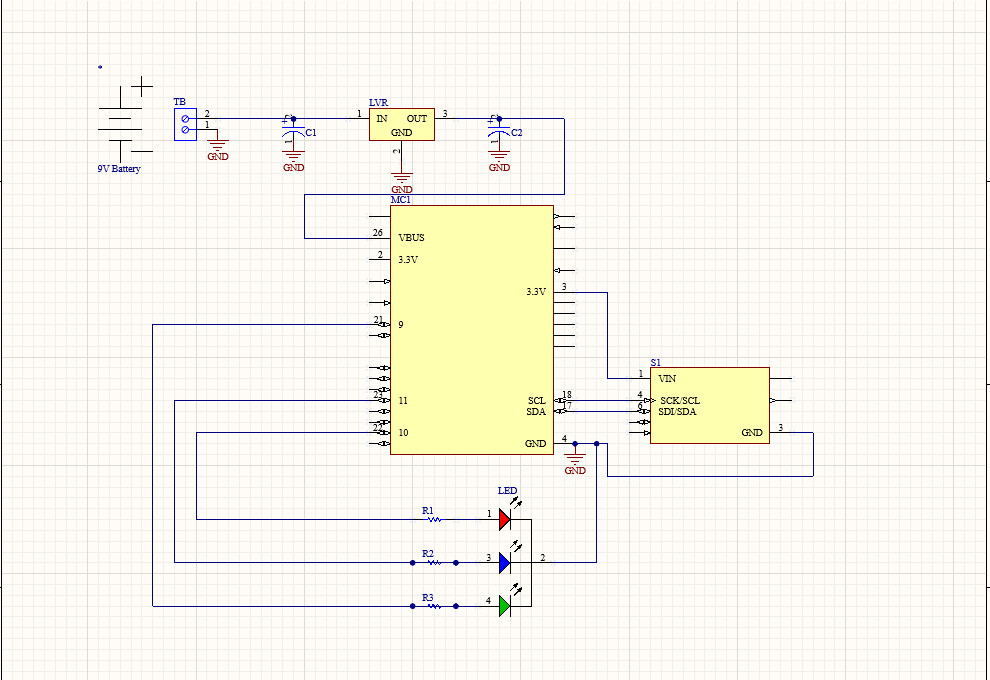
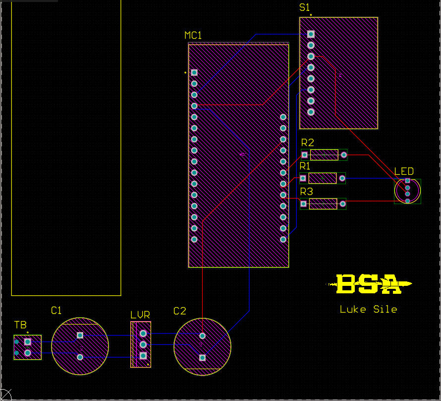
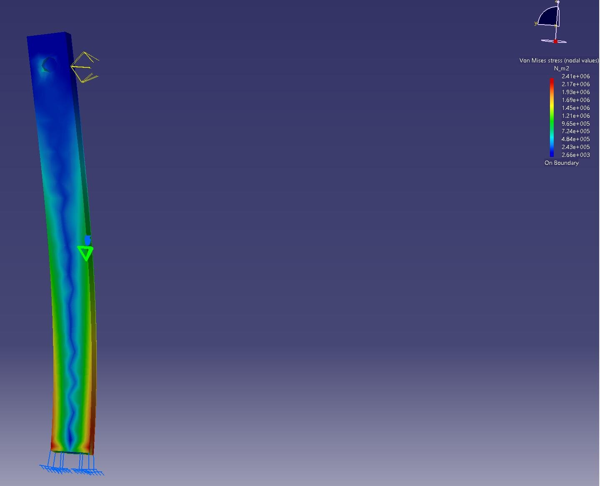
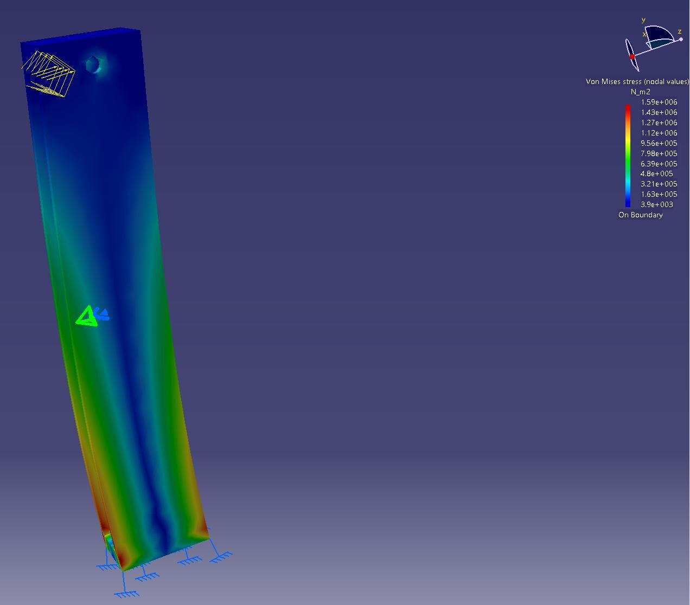

Hardware and perception integration for the lab's third-generation over-actuated UAV, built to hover in any orientation.
Design structural and mechanical parts in SOLIDWORKS, assemble prototype hardware, and run subsystem integration and validation tests ahead of autonomous flight experiments.
Integrated, calibrated, and evaluated LiDAR and stereo camera perception for localization, mapping, and autonomous navigation.
Own hardware and software integration of a newly funded robotic arm payload with a Michigan State University lab: a tree-shaking end effector for automated apple harvesting.
SOLIDWORKSLiDARStereo visionElectromechanical integrationFlight test
On the bench at iRaL: robotic arm prototype, test quadcopter, and a ZED Mini stereo camera.

Lab context: iRaL's MorphQuad poster on morphable quadrotors for maneuverability, manipulation, and resiliency.
Active
Operation Nightcrawl: autonomous flight in the dark
By April 2027, AG3's drone will autonomously navigate, map, and detect targets in a dark, GPS-denied space like a tunnel or parking structure.
Militaries, first responders, and inspectors need drones that work underground, indoors, and in collapsed buildings, where GPS and good lighting disappear. The 13-person team covers autonomy, sensing and detection, systems integration, mission software, and strategy.
Fall 2026Navigate without GPSLow-light flight, SLAM mapping, obstacle avoidance. Indoor navigation demo, dark tunnel run, and a 3D map of the test space.
Winter 2027Find targets on its ownMission planning, onboard object detection, autonomous exploration, and an operator dashboard. Autonomous search mission with live detection.
Apr 2027Integrated demoFinal integrated demonstration for AG3, with software built to scale to swarms.
ASIMOV (Autonomy Standards and Ideals with Military Operational Values) asks how you objectively measure whether an autonomous system behaves ethically in military operations.
We aren't building the autonomous system. We're building the ruler it gets measured with.
Led the team and co-authored the System Requirements Document, turning military operational values into traceable DT/OT requirements across Level 0, 1, and 2.
Took the project through a System Requirements Review covering stakeholder analysis, requirement decomposition in MagicDraw, FMEA, and a conformance plan.
Built simulation testbeds that apply Law of Armed Conflict and Rules of Engagement logic to score autonomous agent behavior.
L0-001 · L0-002MeasurementScore a scenario's ethical difficulty and a system's ethical readiness, separately and repeatably.
L0-003 · L0-005Values & IntentEncode military operational values and commander's intent into what gets evaluated.
L0-004 · L0-009GovernanceA common evaluation language for DT/OT, with ethical, legal, and societal review built in.
Try it: constraint simulation. Press Run, then adjust civilian density or the proportionality threshold.Interactive
Michigan Collins Launchable Operational Unmanned Drone. An autonomous fixed-wing search aircraft and COTS quadcopters work with a ground station so an operator can task and confirm targets.
Responsible engineer for the fixed-wing flight computer on the Controls team, making sure it has the ports and processing to connect the servos, sensors, telemetry radio, and companion computer my teammates own.
Ran the flight computer trade study: screened four autopilots against six go/no-go constraints, including manual RC takeover within 1 s, at least 6 PWM outputs, 0 to 40 °C operation, and delivery before the build window.
Weighted five criteria by pairwise comparison (reliability 30%, interfacing 25%, firmware 20%, cost 15%, mass 10%), scored each option with a weighted sum and TOPSIS, and checked the result under three alternate weightings.
Selected the Pixhawk 6X on a Jetson Orin Nano baseboard: triple IMUs, an independent IO processor for override, Ethernet to the onboard Jetson, and $0 marginal cost from team inventory. The Pixhawk 6C Mini stays as the backup.
Decomposed Level 0 mission requirements into traceable subsystem requirements for autonomy, communications, and the ground station, including a 250 m line-of-sight link and full mission data logging.
*Includes the Jetson Orin Nano, heatsink, and SSD. The other options would need a separate companion computer for onboard detection.
Pixhawk 6XJetson Orin NanoPX4 / ArduPilotTrade studiesTOPSISRequirements decompositionMAVLink telemetry
Flown
1U CubeSat: power, avionics, and flight code
Designed, built, and tested my own 1U CubeSat-format system through BSA's CubeSat Demonstration Program, from requirements through a successful tethered balloon flight.
Designed the electrical power system: an L78 linear regulator stepping a 9 V battery down to 5 V, with input and output capacitors sized from the datasheet, and a 3.3 V rail for the sensor. Hand-calculated worst-case current draw, regulator efficiency, and battery life.
Laid out a custom PCB in Altium around an Adafruit Feather RP2040 Adalogger, a BMP388 pressure and temperature sensor on I2C, and an RGB status LED. Validated on a breadboard first, then continuity-tested the fabricated board before assembly.
Wrote and unit-tested the flight code in C++: logs sensor data to microSD at 1 Hz or faster, drives the status LED, handles errors, and writes its own log file so it runs untethered from a computer.
Modeled the 3D-printed structure in Siemens NX with the PCB imported from Altium, and verified the system against its requirements: under 250 g, 1U form factor, and 20 minutes of operation in flight conditions.
The finished CubeSat: 3D-printed 1U frame, flight board, and paracord for the balloon flight train.

The assembled flight board, with the Feather RP2040, BMP388, L78 regulator, and 9 V battery holder.

Altium 3D render of the same board, with the Feather RP2040, BMP388, L78 regulator, and filter capacitors.

Schematic: 9 V in, L78 regulator to 5 V VBUS, BMP388 on the 3.3 V rail and I2C, RGB LED on three digital pins.

Two-layer board layout in Altium, top traces in red and bottom in blue.
Member of the founding class of MDT's Swarm Drone subteam, working on decentralized multi-agent UAV autonomy and a development pipeline that moves from simulation to flight.
Multi-agent autonomySim-to-flight
High-power rocketry club
Co-founded a student high-power rocketry organization that flies 4 ft rockets to about 1,400 ft apogee. I coordinate Tripoli Level 1 certification and launch operations.
Tripoli L1Launch operations
Completed
RC hovercraft: electronics, CFD, and a motor mount redesign
Led avionics on a team-built RC hovercraft and co-led its CATIA design and laser-cut fabrication.
Designed, built, and tested the electronics. Wrote the Arduino control code, which reads two RC receiver channels to drive the steering servo and motor throttle, with a hardware kill switch and navigation lights.
Simulated a hemispherical hull in a 24 in wind tunnel in Star-CCM+ to see where the flow accelerates and what loads act on the craft.
Ran FEA in CATIA on the plexiglass motor mount under 1.5 N of thrust, then redesigned it to cut deflection in half without raising stress or mass. The redesign beat all three targets.
Motor mountOriginalRedesignChange
Max displacement0.0145 in0.00471 in−68%
Max von Mises stress2.41 MPa1.59 MPa−34%
Mass3.32 g3.03 g−9%

Original mount: peak stress 2.41 MPa at the glued base.

Redesigned mount: peak stress 1.59 MPa, with a third of the deflection.
Star-CCM+ velocity field around the hull: flow speeds up to about 19 m/s over the top.
Built free body diagrams for touchdown cases, calculated peak stresses, and specified materials to meet structural requirements. Oct to Dec 2025.
Major
Aerospace Engineering
Minor
Electrical Engineering (Electromagnetics)
GPA
3.5 / 4.0, Dean's Honors List
Honors
Sigma Gamma Tau
Languages
English, French (native), Spanish
About
Hardware that has to work the first time
Engineer. Builder. Soccer player.
I'm a junior in Aerospace Engineering at the University of Michigan with a minor in Electrical Engineering. Most of my work sits where the electronics meet the vehicle: power systems, flight hardware, sensors, and the requirements that tie them to a mission.
Right now I'm a research assistant at the Intelligent Robotics and Autonomy Laboratory (iRaL), building hardware for an omnidirectional UAV. At Michigan Defense Tech I'm on Operation Nightcrawl, building toward autonomous drone flight in dark, GPS-denied spaces, after leading our DARPA ASIMOV team last spring. I also designed and built a 1U CubeSat system, and work on avionics for M-CLOUD, a Collins Aerospace sponsored ISR project.
I grew up across several countries, and I bring that adaptability to every team I join. Off the clock I play club and semi-pro soccer, which is where I learned to train hard and perform under pressure. I'm looking for internships in defense and aerospace, especially in avionics, autonomy, and systems engineering.
May 2026 to nowResearch Assistant, iRaL
Aug 2026 to nowOperation Nightcrawl, Michigan Defense Tech
Sep 2026 to nowFlight Computer Responsible Engineer, M-CLOUD (X88)